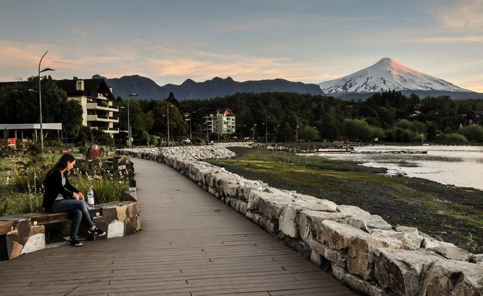

You can enjoy with the natural life and relaxing in our termas
Author: Magazines Chile tourist
TUndoubtedly, it is one of the most anticipated seasons of the year by adults and children, it is often synonymous with vacations, sun, beach, relaxation and spending moments with the family.
On this occasion, summer came to our continent on December 22 at 01:19 a.m., past midnight.- It was at that moment that the well-known Solstice occurred, which began summer in all the countries that are located at south of the equator. On the other hand, north of the Equator line the coldest season began: winter.
Note:You must do all the In-class activitiesby yourself.

This is all the activities you can do:
Termas geométricas: un majestuoso baño termal, inmerso en medio de las montañas, ríos y lagunas. Utiliza más de 70 fuentes de agua termal para rellenar las piscinas, y las temperaturas oscilan entre los 30 y 35° C. Cuenta con 1.600 metros cuadrados de superficie, siendo una de las termas más grandes de todo Chile.
Volcán Villarrica: es un asombroso volcán que ofrece hermosos paisajes para los que lo exploran. Visitarlo es una de las actividades más extremas y entretenidas de Pucón, pudiendo practicar montañismo y senderismo en él. En invierno la cosa se pone más interesante, pues su superficie nevada permite practicar ski y snowboard, dos deportes muy entretenidos que ofrecen una experiencia electrizante.
Cuevas volcánicas del Villarrica:e encuentran al pie del volcán Villarrica, y consisten en grandes bóvedas que albergan gran cantidad de lava y minerales de distintos tipos, que han quedado en el subsuelo tras las erupciones. Allí dentro también se pueden observar preciosos ríos de material volcánico, procedentes del cráter del volcán..
Río Licura:un destino que ofrece un ambiente tranquilo, rodeado de una interesante fauna. Allí se puede pescar, observar las aves o sumergirse en las limpias aguas, siendo una experiencia muy relajante y placentera. Los que aman la aventura también se divertirán allí, pues es posible practicar el deporte de rafting con rápidos clase III, IV y V.
Salto El León:es una hermosa cascada que tiene más de 90 metros de altura, siendo una de las más visitadas en todo Chile. Su tamaño majestuoso hace que explorar este sitio sea una experiencia digna de probar. Sus alrededores cuentan con grandes bosques de robles y otros árboles, donde incluso se puede encontrar la flor Copihue, símbolo nacional chileno.
Trekking
We are already in summer; one of the favorite stations for tourists
Currently, if you want to know more Pucon City more.